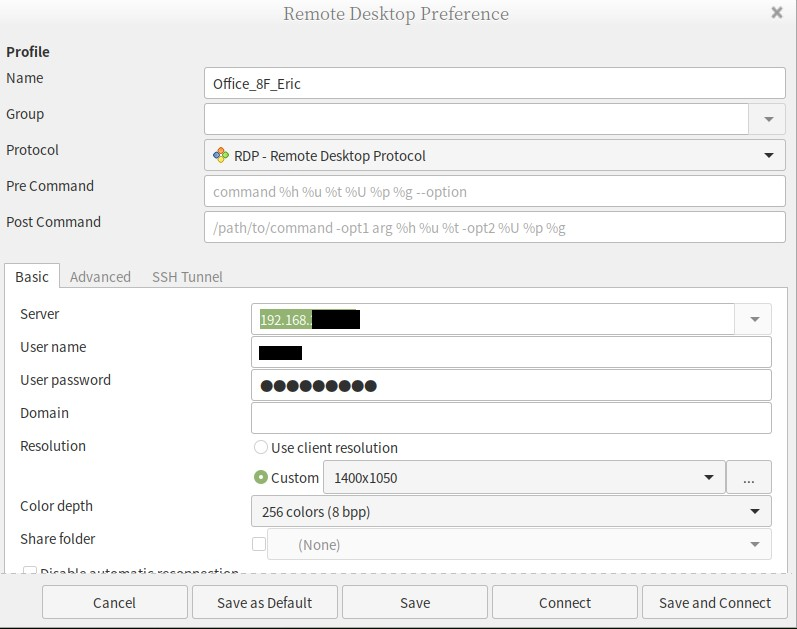

在 Ubuntu 使用 Windows 遠端桌面 (RDP)
Contents
20201016 更新
公司架構圖的 IPsec 是 Site to Site VPN 啦! 一般使用者用的是 Remote access VPN 採用 SSL VPN
FortiClient for Linux 可以正常使用喔~ 自己雷自己
這篇會出產的原因是因為….
- FortiClient Linux 版本不支援 IPsec
- 參考這篇 Linux Mint 建立 L2TP VPN CLIENT 也沒辦法設定好 Forti IPsec
- Fortinet 官網幾年前的教學 也沒辦法設定完成
但還是希望在X樓開會時手邊裝有 Linux Mint 19.2 的筆電可以摸到 CCC > DDD or DDDD ，既然 Ubuntu 沒辦法完成 Forti IPsec 的設定那就想說透過 8F 的 Windows
安裝 Remmina on Mint 19.2 Tina
|
|
設定參考如圖片，假如有遇到 Your libfreerdp does not support H264 請參閱參考資料連結

參考資料
Author 老柯
LastMod 2022-12-22 (5109956)